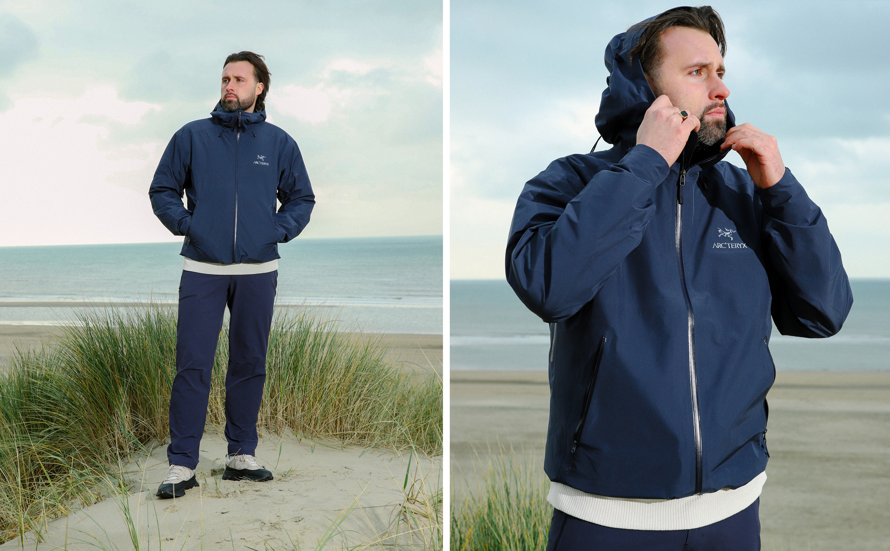
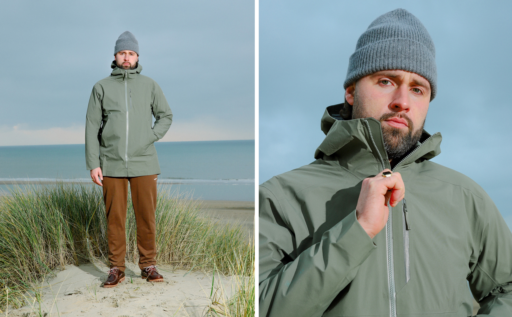
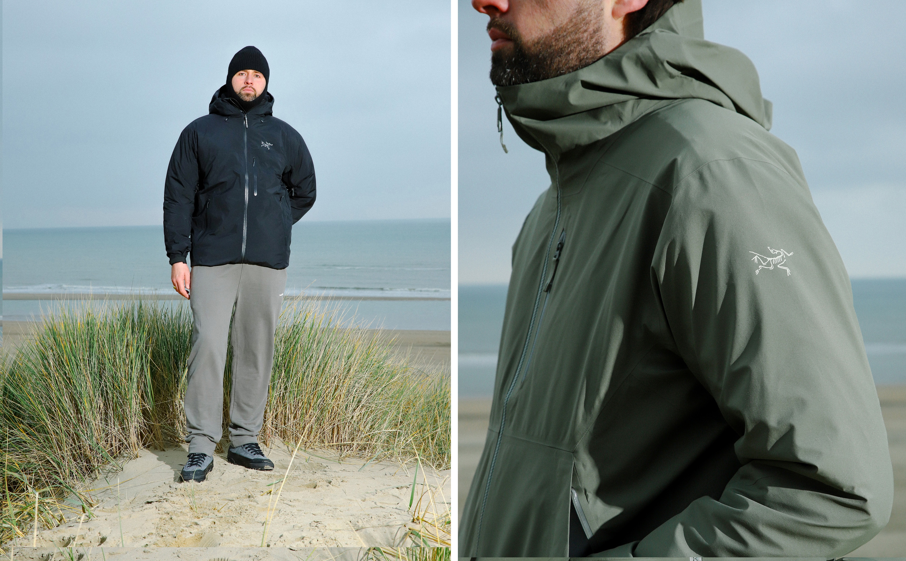
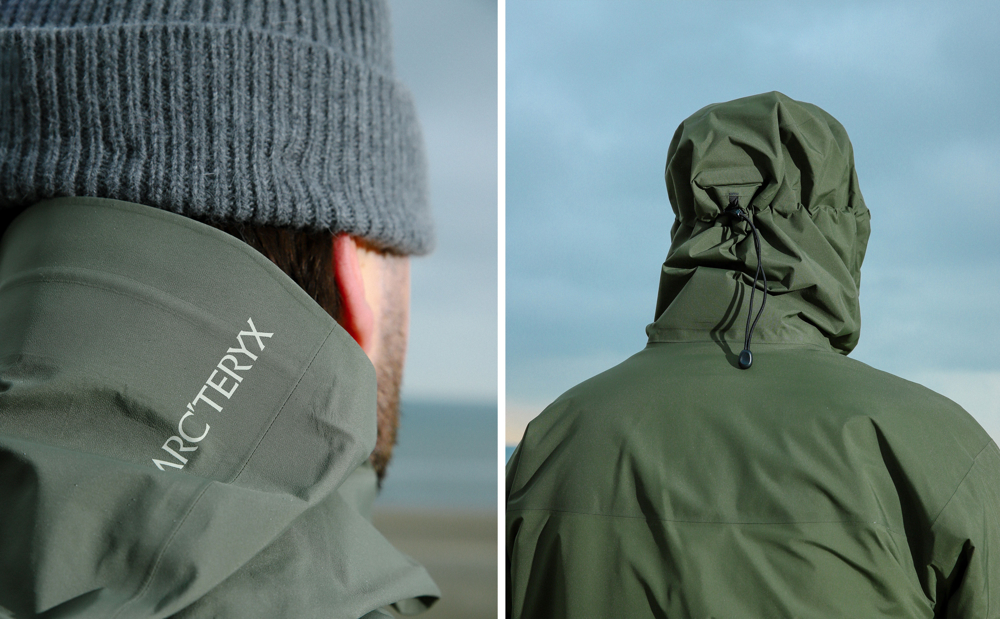

06/12/2022 - 16:24
Obsessive Design By Arc'teryx
Arc'teryx is gebaseerd op het idee dat er altijd een betere weg is. Hun avonturen en dus producten zijn geïnspireerd door de bergen aan de kust als een uitgestrekte wildernis. Veel Arc'teryx-producten bevatten GORE-TEX-stof, die 9 miljard poriën per vierkante inch heeft. Dit beschermt als een schild tegen water terwijl vocht uit het lichaam toch kan ontsnappen. Bovendien heeft de bovenkleding van Arc'teryx nog 4 andere innovatieve componenten.
1. Articulated fit
Ontworpen om natuurlijker te bewegen door de vorm van het menselijk lichaam na te bootsen. Dit heeft een grote impact op het comfort, protectie en prestaties.
2. Microseams
Het verminderen van de breedte van de naden betekent minder gewicht, volume en materiaalgebruik terwijl het ademende oppervlak van het product wordt vergroot.
3. Waterdichte ritsen
Een kenmerkend detail dat functioneel is en bescherming garandeert.
4. Stoorm hood
De juiste combinatie van maatwerk, materialen en constructie zorgt voor bescherming met vrij zicht.
De collectie van Arc'teryx bestaat uit hoogwaardige items met eigentijdse designs en de nieuwste technologie om je outdooravonturen op een gebruiksvriendelijke manier te supporten. Om deze premium items uit de Arc'teryx-collectie zelf te ervaren, doe een bezoekje aan de winkel of bestel online bij Baskèts.
- 
- 
- 
- 